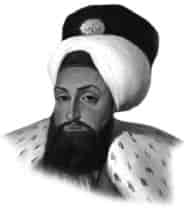

III. SELİM
Annesi : Mihrişah Sultan
Doğumu : 24 Aralık 1761
Vefatı : 28 Temmuz 1808
Saltanatı : 1789 - 1807 (18 yıl)
III. Selim, İstanbul’da doğdu. Sarayda çok güzel bir şekilde yetiştirildi. Edebiyata ve güzel yazı yazmaya çok meraklı idi. Yazmış olduğu hat ve levhalardan bazıları cami ve türbelerde asılmıştır. Arapça ve Farsça lisanlarına fevkalade vakıftı. Çok merhametli ve nazik tabiatlı idi.
Devrinde gerçekleşen önemli olaylar: 1791’de Avusturya ile Ziştovi, 1792’de de Rusya ile Yaş Antlaşması yapıldı. 1793’de Nizam-ı Cedid askeri teşkilâtı kuruldu. 1798’de Na-polyon’un Mısır’a saldırmasıyla, Fransa ile savaş başladı. 1799’da Rusya ve İngiltere ile ittifak yapıldı. Napolyon’a karşı meşhur Akka müdafaası yapıldı. Cezzar Ahmet Paşa Mısır’da Fransızlara boyun eğdirdi. Bazı iddialara göre Na-polyon bu devirde Müslüman oldu. 1801’de Fransızlar Mısır’ı mecburen boşalttılar. 1802’de Fransa ile Paris Antlaşması yapıldı. Aynı yıllarda Arabistan’da “Vehhabilik” isimli batıl mezhebin faaliyetleri görüldü. Vehhabiler üç ay müddetle Mekke’yi ve Medine’yi işgal ettiler. Bütün mübarek şahsiyetlerin kabirlerine hakarette bulundular, yakıp yıktılar. 1806’da Sırp İhtilâli oldu ve Ruslarla savaş başladı.
1807’de Kabakçı İhtilâli oldu. Bu ihtilâlle III. Selim tahttan
indirildi. Bir yıl sonra da kırk altı yaşında iken şehit edildi.
Dini, vatanı ve milletine çok düşkün olan III. Selim, aynı zamanda şairdi. Kırım’ın Rusların eline geçtiğinde şu içli mısraları söylemiştir:
Kalalım mı kılıç altında öyle Oturmak dinimizde var mı böyle Esir etmiş nice tatarı bir bir Kırım Rusya’da kalsın mı söyle Ol Moskof’tan varıp öcüm alayım Ya düşman içre helâk olam şöyle.
Çocuğu yoktu.